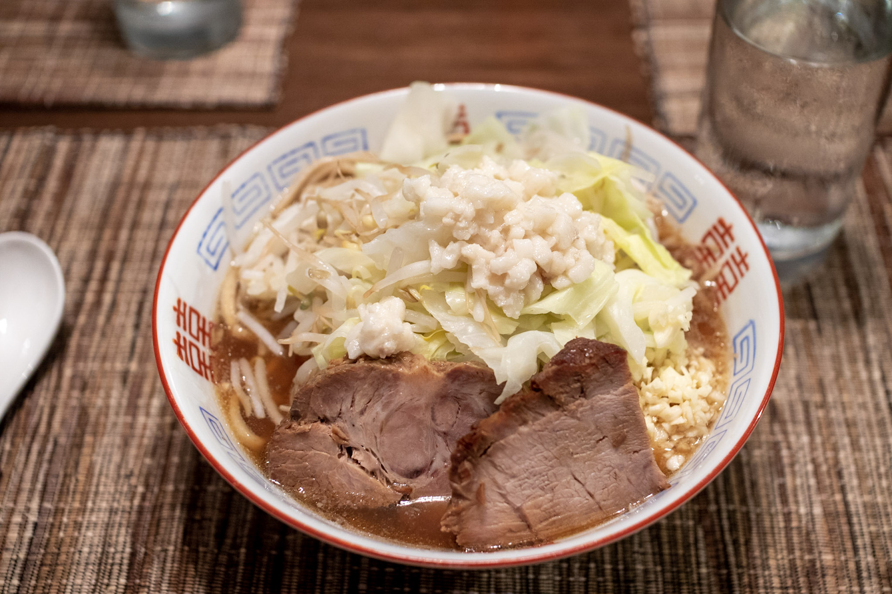
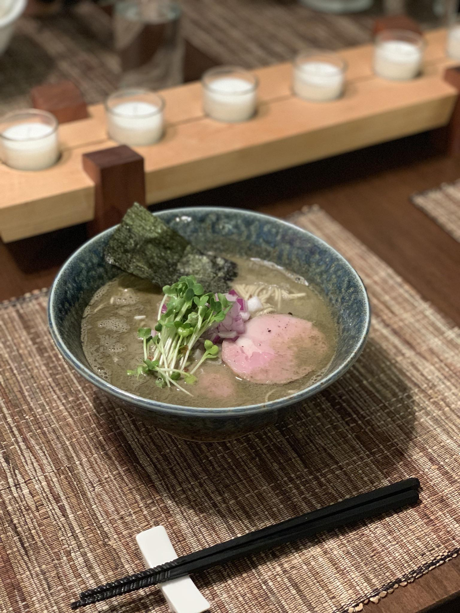
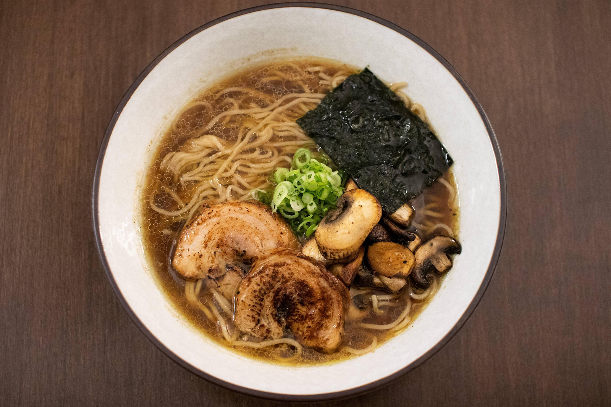
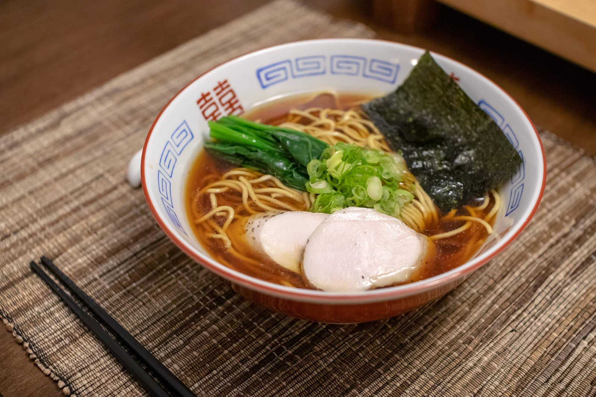

Standard Bowl Assembly¶
Once you have all of your components, it’s time to assemble the bowl of ramen.
Step 0: Identify Your Serving Bowl¶
Before you get to the actual ramen feasting, you will want to consider the vessel you’ll be serving the ramen in. Ramen is typically served in what is called a donburi-style bowl. If this kind of bowl isn’t available, something like a large cereal bowl is probably okay. If you’re trying to up your ramen presentation, consider the following characteristics when picking a bowl for the specific kind of ramen you decide on making:
shape: Most ramen bowls are cupped at the bottom, and have a slightly flared lip at the top. But some are v-shaped, or almost inverted, with a small base that flares outward into a wider lip. Different shapes make the final dish look different; a narrower base hides the noodles, while a wider bowl shape shows them off.
height: Some bowls are deep and tall, while others are shallow and wide. Shallower bowls mean the noodles will sit on the bottom of the bowl, which makes them look more bountiful, but makes the dish look less soupy.
material: Ramen bowls are usually made of ceramic, but some bowls can be made of metal or even plastic. Ceramic is easy to clean, heat resistant, and affordable, but can chip or break.
color: A darker bowl is going to hide the nuances of a clearer broth; instead of seeing how gorgeous that yellow chicken broth is, it just looks black. And a lightly colored bowl may detract from the color of an opaque broth, the lack of contrast making the visual confusing. Generally, white is the easiest to work with since it neither adds nor detracts from the contents of the bowl. Is it obvious I like white serving ware? Yes. Cool.
thickness: A bowl made of thicker material is going to hold heat for longer and be less prone to chipping. But it may look less elegant and chunky.
My ideal bowl is a classic shape: Round, with a slightly flared lip, which can be used to carry the bowl without burning yourself as the bowl heats up. It’s made of ceramic, is white, and is moderately thick. It should not be extravagant looking but should be wide enough that you can add toppings without totally hiding the soup and noodles below. Currently, I am loving the bowls by Koyo [36]. Their medium 52-oz bowl is essentially perfect, though I’ve also used their straight-sided V bowls, which are also great. Another good place to buy ramen bowls is Korin [37].
Step 0.5: Get Your Mise en Place Ready¶
Ramen does not work without a well set up station where the components are prepped, chefs call this mise en place; it’s how a shop can get a bowl done in five minutes. So get yourself ready.
Have your soup and noodle-cooking water already warm or boiling.
Have all ingredients like chashu and scallions sliced and ready to be plated. If you’re topping your bowl with torched chashu, now is a good time to do it. I try to have no more than five toppings. Less is more here!
Have your containers of tare and aroma oil out, with appropriate utensils to scoop into your serving bowl.
Tempter cold items, like eggs or noodles, by bringing them out of the fridge when you start to heat your water for cooking.
Get a timer ready.
Step 1: Preheat Your Bowl¶
Yes, you should do this. This is the first thing almost all great ramen shops do that improves the final dish. Short of using a double-walled metal bowl or something hyper-insulated, if you add hot soup to a lukewarm or room-temperature bowl, the bowl’s material is going to absorb a lot of that liquid’s heat as the two reach equilibrium, easily 20–30 °C/40–50 °F sapped immediately from your soup. And lukewarm ramen isn’t great. Preheating the bowls completely prevents this issue. In ramen shops, they’ll often take some of the boiling water from the noodle cooker and pour it into the bowl temporarily to heat things, but at home, I just set my oven to the lowest setting it has, in this case, 77°C/170°F, and preheat my serving bowls in there. By the time the oven reaches temperature, the bowls are hot (almost too hot), and I turn off the oven.
Step 2: Cook Your Noodles¶
Once your mise en place is ready, it’s time to start cooking. I like to start with the noodles, as they can take the longest in the assembly. With the water boiling rapidly, add your noodles, then set your timer and let them cook, keeping the water boiling as much as possible to promote even cooking. Give them a quick stir to make sure they won’t stick together as soon as the timer is going. It’s worth noting that noodles can vary in terms of the time required to finish them. Look for manufacturer recommendations on timing, or taste occasionally for doneness.
It’s critical, by the way, that you don’t cook your noodles in the soup itself. These aren’t instant noodles; fresh ramen noodles release salt, alkaline salts, starch, and even sometimes food dye as they cook. This stuff doesn’t taste all that great, and it will severely mess up the pristine soup you’ve worked so hard on. For control’s sake, cook the noodles in separate water.
Step 3: Prepare The Bowl for Noodles¶
While the noodles cook, add tare, aroma oil, and soup, ideally in that order, to your serving bowl. If you’re doing something funky, such as adding spices, pepper, or fish powder, add them with the tare.
Tare amounts vary by recipe, look at suggestions below for specific examples.
Adding the soup last ensures the tare is evenly dispersed and the final soup is evenly seasoned. If you’re using a thicker tare, like miso, you’ll want to whisk things in the serving bowl.
Step 4: Strain The Noodles¶
When the noodles are done, it’s imperative to move quickly, as these are fresh noodles, and 5–10 seconds is all it takes for these noodles to go from chewy and pliant to soft and limp from overcooking. Remove the noodles from the cooking water immediately, and strain the noodles as thoroughly as you can. The goal is to remove as much excess water as you can in 5–10 seconds. This water will dilute your soup and potentially give it a strange flavor, so thorough straining is important.
Many chefs in Japan have developed stylistic straining methods to do this effectively. They’ll use noodle baskets, flailing them around and spraying water everywhere. Or throw their arms to the side and crash the noodles against the confines of the noodle basket. Chef Jack Nakamura, a legendary ramen chef in Japan, is particularly known for his noodle straining technique, which has been dubbed the “Heaven’s Drop” technique [38].
I don’t think this showmanship is necessary, even if it looks cool. I just gather the noodles into a fine mesh strainer, or noodle basket, and shake over the pot quickly to make sure there’s very little water [39].
You also want to move quickly because ramen noodles tend to get sticky when exposed to air after cooking. The residual gelatinized starch quickly links up as the surface dries, promoted by the alkaline environment, and your noodles will go from separate and slippery to clumped and caked. If this does happen, just dunk the noodles back into hot water for 5–10 seconds to dissolve some of that starch and separate them again. They won’t be as perfectly cooked, but they won’t be clumped and impossible to eat. And move quickly next time!
Step 5: Separate and Line Up The Noodles: Noodle Fold¶
Once the noodles are added to the bowl, they’ll probably be bunched up into a ball. Some shops leave the noodles as is, others use a pair of chopsticks to shake the noodles briefly in the soup to distribute them evenly and prevent them from sticking.
This is also where you can perform the so-called, “noodle fold.” Noodle folding is a common plating technique to take the noodles and essentially fold them into a bundle. Doing this effectively separates each strand so they’re easier to pick out of the bowl while eating, and provides a platform for toppings later on. It also looks cool. I use a pair of super-long kitchen tweezers to do this, lifting the noodles and folding them over themselves. But chopsticks or tongs can be used to create the fold.
The fold is not easy, making it takes practice. And some noodles, such as thin, low hydration ones, fold better than others, like curly, short noodles. Ultimately, it is a mostly aesthetic choice with some arguable functional benefits. If you’re dead set on noodle folds, consider the following qualities of the noodle as part of the design of the bowl:
Hydration: Noodles with more water are more prone to curling. Noodles at 36% hydration or lower create better folds than those above.
Kansui Composition: Potassium carbonate creates rigidity in the noodle, preventing curling. An increase in the potassium carbonate amount can help create more aesthetically pleasing folds.
Length: Longer noodles are easier to fold, as they give you more runway to pull from the soup and drape into the aforementioned noodle fold shape.
Thickness: Thicker noodles are harder to fold, as they’re more prone to slipping out of the grip of the tool you use to lift them due to their increased weight per noodle.
Cut: An oblong cut (meaning where the noodles are slightly wider than they are thick) can help with creating presentable noodles, as the noodles more easily align on the tool you use to lift them.
Step 6: Plating¶
Add toppings. The plating is entirely up to you, but I have a few recommendations. If you’re using nori, add it last, as it quickly gets soggy. I add the meat first, so it can maintain warmth. I’m also pretty particular with the position of the toppings. Using a clock as an analogy, I like placing the green onion in the middle, chashu/meat at 6 o’clock, nori at 1 or 2 o’clock, egg at 11 or 12 o’clock, and other toppings at 3 or 9 o’clock.
Plating examples are below. Notice that in virtually all examples, the bowl has the protein at the 6 o’clock position, with toppings aligned mostly towards the center of the bowl.
   Step 7: EAT¶
Even the way you’re supposed to eat ramen is highly disputed. I’ve heard chefs say that noodles degrade in quality after 8 minutes (of course, different noodles will behave differently in soup, as we have discussed). But it’s true that ramen, being the scalding hot dish it is, is best eaten quickly, to avoid the noodles getting soggier in the hot broth. Some adjuncts in the noodle will help maintain the structure to an extent, but after a while, all noodles become soggy in hot soup.
Most ramen nerds agree that noodles should be slurped when eating. This is mostly a function of cooling the noodle while eating it, but slurping also brings in air, helping with retro-nasal olfaction, and allowing you to taste the soup and noodles more fully. I wouldn’t say it’s required, I’m hardly dogmatic, but I’d say it tastes a lot better when you slurp. Also, it’s not necessarily impolite either. Slurping noodles is traditional in Japan, often encouraged even. I think it’s time we embrace the custom.